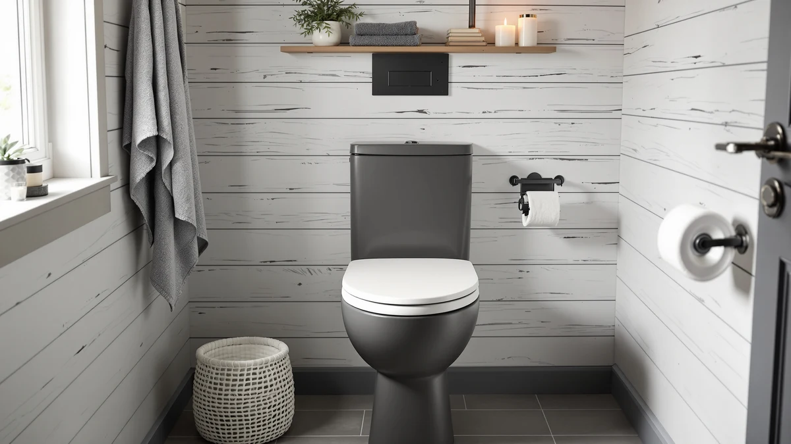

Toilet Bowl vs Water Closet (2026)
Prices and picks verified as of September 2026. Independent, reader-supported reviews.


Things to Know Before You Buy
- A toilet bowl is a fixture. A water closet is a room. You can own one without the other, and most US homes only have the fixture, not the enclosed room.
- Most residential codes call for about 30 inches of clear width and 60 inches of clear depth in front of the bowl for a water closet to pass inspection.
- Framing a water closet into an existing bathroom typically runs $1,500 to $4,000 for a wall, door, and finishing, depending on plumbing access.
- Appraisers and real estate agents treat a private water closet as a distinct selling point in primary suites, separate from the toilet bowl itself.
- The same wall that adds privacy in a primary suite can shrink a small guest bathroom enough to hurt its usability.
The toilet bowl vs water closet question trips up a lot of homeowners, because the two terms sound like they describe competing products when they actually describe two different things. A toilet bowl is the ceramic fixture that flushes waste. A water closet is the small, walled-off room built around that fixture, complete with its own door.
You will find toilet bowls in almost every US bathroom, but you will only find a true water closet in homes where someone deliberately framed a wall to separate the toilet from the tub, shower, and vanity. This guide compares the two by build, cost, and daily use, then breaks down which one fits your bathroom and your budget.
Quick Answer
For most bathrooms, a standard toilet bowl in an open layout is the practical choice: it costs nothing extra to build and works fine in a room under 40 square feet. A dedicated water closet earns its keep in primary suites shared by two people, where separating the toilet from the rest of the bathroom adds privacy that buyers and daily users both notice.
What is Toilet Bowl?
A toilet bowl is the fixture itself: the bowl, the trapway that carries waste to the drain line, and in most residential models, the tank that sits behind it and holds the water for each flush. Manufacturers sell it as a single unit or a two-piece unit, and either way it bolts to a flange in the floor and connects to the home's supply line and drain stack.
Every water closet contains a toilet bowl, but the reverse is not true. In a typical American bathroom, the toilet bowl sits along one wall of an open room, sharing floor space with the tub, shower, and sink. Nothing separates it from the rest of the room except distance and maybe a half-wall.
Toilet bowls come in a handful of standard configurations that matter more for comparison than the room around them: round or elongated, standard or comfort height, and gravity-fed or pressure-assisted flush systems. When you compare toilet bowl vs water closet features, the bowl itself is where the plumbing decisions live, things like bowl shape, flush volume, and rough-in distance from the wall. The room is a separate, later decision.
What is Water Closet?
A water closet is an enclosed room, usually 3 by 5 feet or larger, built around a toilet bowl and closed off with its own door. Builders sometimes call it a WC on floor plans, a term that traces back to the era when the toilet lived in its own small room rather than a shared bathroom.
In new construction, a water closet shows up most often inside a primary suite, tucked next to the shower or between the vanity and the closet. Contractors frame a stud wall, run the same plumbing a standard bathroom would need, and add a door that swings out or slides so it does not collide with the toilet bowl inside.
Retrofitting a water closet into an existing bathroom means giving up floor space somewhere else in the room, which is why it shows up more often in larger primary suites than in secondary bathrooms. Homeowners comparing toilet bowl vs water closet layouts during a renovation need to check local code minimums for clearance and door swing before committing to the wall placement, since a water closet that fails inspection has to be reframed.
Head-to-Head: Build Quality & Durability
A standalone toilet bowl is a manufactured product with a warranty, usually vitreous china that resists chips and stains for decades if you do not drop anything heavy on it. Its durability depends entirely on the fixture: glaze quality, trapway design, and how well the wax ring seals to the floor flange. None of that changes whether the bowl sits in an open bathroom or inside a water closet.
A water closet's durability is a construction question, not a manufacturing one. The wall, door, and finishes age the way any interior wall does, and a poorly vented water closet holds humidity longer than an open bathroom because it has less airflow. Owners who skip a dedicated exhaust fan in a water closet report more mildew on the drywall and door frame within a few years, according to contractor forums and renovation guides that track common callback issues.
Weighing toilet bowl vs water closet durability comes down to this: the bowl is a product you can replace in an afternoon, while the water closet is a structural feature that costs real labor to modify once it is built. Get the ventilation and door swing right the first time, because redoing a framed water closet is far more disruptive than swapping a toilet bowl.
Head-to-Head: Price & Value
A new toilet bowl runs anywhere from $150 for a basic gravity-fed model to $600 or more for a comfort-height elongated bowl with a pressure-assisted flush. Installation labor adds another $150 to $300 if you hire a plumber, and that cost stays roughly the same no matter what room the bowl sits in.
A water closet costs far more, because you are paying for construction rather than a fixture. Framing a stud wall, hanging a door, running or extending plumbing, and finishing drywall and paint typically lands between $1,500 and $4,000 for a straightforward retrofit, and more if the plumbing needs to move. New construction folds that cost into the overall build, which is one reason water closets show up more in builder floor plans than in DIY renovations.
On value, the toilet bowl vs water closet math favors the fixture for anyone on a tight budget: you get a functional bowl for a few hundred dollars. The water closet only pays off its higher price in specific situations, mainly primary suites where the added privacy shows up in resale comparisons against similar homes without one.
Head-to-Head: Use Experience
Living with an open toilet bowl means the fixture shares sightlines and sound with the rest of the bathroom. Two people can use the sink and toilet at the same time, which speeds up a busy morning routine, but it also means less acoustic and visual privacy, something couples and roommates notice more than single occupants.
A water closet changes that experience directly. Closing the door isolates sound and sightlines from the rest of the bathroom, so one person can use the toilet while another showers or gets ready at the vanity a few feet away. Owner reviews of primary suite renovations consistently mention this as the main reason they added one, more than any factor tied to the toilet bowl itself.
The tradeoff shows up in small rooms. A water closet without a window or a strong exhaust fan can feel dark and stuffy, and reviewers who installed one in a converted closet space often add a toilet night light or a fan upgrade afterward to fix that. An open toilet bowl setup skips that problem entirely because it shares light and airflow with the whole bathroom, which is the clearest day-to-day gap between toilet bowl vs water closet living.
When to Choose Toilet Bowl
Stick with an open toilet bowl setup if your bathroom is under 40 square feet, if you live alone or with one other person, or if your renovation budget does not have room for construction beyond fixtures. A single-occupant bathroom rarely needs the privacy a water closet adds, and the square footage a wall would take up is usually better spent on storage or a larger vanity.
This is also the right call for rentals, secondary bathrooms, and any space where resale value depends more on square footage than on layout novelty. In the toilet bowl vs water closet decision, buyers touring a small guest bathroom generally respond better to an open, airy room than a chopped-up one, even if the chopped-up version includes a private toilet.
When to Choose Water Closet
A water closet earns its cost in a primary suite shared by two people, especially when the bathroom is large enough that walling off 15 to 20 square feet still leaves room for a double vanity, tub, and shower. Couples who get ready at the same time benefit most, since a closed door removes the toilet from shared sightlines during the busiest part of the day.
It also makes sense in homes built for multigenerational living or frequent guests, where privacy during a shared bathroom routine matters more than open floor space. If you are renovating a primary suite and comparing toilet bowl vs water closet layouts, this is the scenario where the extra framing, door, and finishing cost consistently pays off in day-to-day comfort and in how the room appraises.
Our Top Picks
Whichever layout you land on, a few accessories work well in both an open toilet bowl setup and an enclosed water closet. These three came up most often in owner reviews for fit, reliability, and value.

Editor’s Pick
Toilet Night Light 2Pack by
Owners in enclosed water closets rely on this most, since the motion sensor lights the bowl without a wall switch outside the room.
$9.89
Check Price on Amazon
Best Value
ALPHA BIDET JX2 Elongated Bidet
Fits standard elongated toilet bowls in either layout, and verified reviewers point to the heated seat as the upgrade they notice daily.
$329.00
Check Price on Amazon
Premium Choice
2 Pack Toilet Night Lights
A battery-powered backup pick for households with more than one bathroom or water closet to light, according to owners who bought a second set.
$13.78
Check Price on AmazonFrequently Asked Questions
Is a water closet the same as a toilet bowl?
No. A toilet bowl is the fixture itself, the ceramic bowl and tank that flush waste. A water closet is the small, walled-off room that houses that fixture. Every water closet contains a toilet bowl, but most toilet bowls sit in an open bathroom rather than a dedicated water closet.
Does a water closet add resale value to a house?
In primary suites, real estate listings and agents commonly treat an enclosed water closet as a desirable feature because it separates the toilet from the tub and vanity. In a small secondary bathroom, the same wall and door can shrink usable space enough to hurt the room's appeal instead.
How much space does a water closet need?
Most building codes call for at least 30 inches of width and 60 inches of depth in front of the toilet bowl inside a water closet, with a door that swings outward or slides. Homeowners installing one after the fact should check local code before framing a wall, since minimums vary by jurisdiction.
Can I add a water closet to an existing bathroom?
Yes, if the room has enough floor space to spare and the plumbing rough-in for the toilet bowl does not need to move. Contractors typically frame a stud wall, add a door, and finish the drywall, a project that costs $1,500 to $4,000 in most markets and takes a few days once permits are approved.
Why do some floor plans call it a WC instead of a toilet?
WC stands for water closet, a term builders and architects use on floor plans to specify an enclosed toilet room rather than an open bathroom fixture. You will see it most often in listings for homes with a primary suite that separates the toilet bowl from the rest of the bathroom.
Final Verdict
The toilet bowl vs water closet decision comes down to who uses the bathroom and how much space you can spare. An open toilet bowl works fine for most households and costs nothing beyond the fixture itself, while a dedicated water closet is worth the framing and drywall in a shared primary suite where privacy outweighs square footage. Whichever layout you choose, an accessory like the Ailun night light above is a low-cost way to make either setup easier to live with after dark.